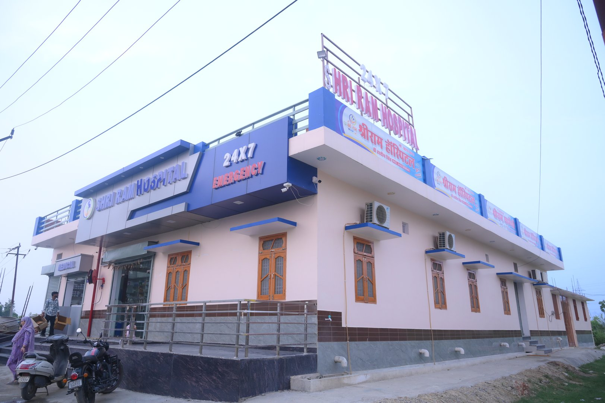
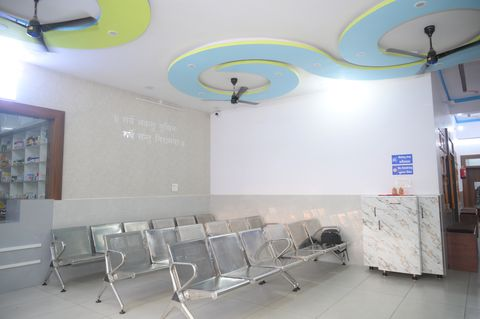
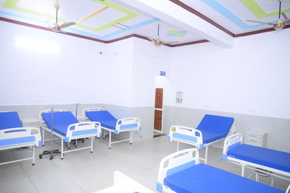

Founded under the expert clinical vision of Dr. Hardeep Singh, Shri Ram Hospital has been a trusted beacon of compassionate, accurate, and affordable healing for families across Aonla, Bareilly district, and surrounding rural communities.
At Shri Ram Hospital, we believe that medical care must be both scientifically sound and deeply humane. Located conveniently opposite the 132 KV Power House in Krishan Vihar Colony, Aonla, our facility was established to eliminate the need for rural and semi-urban patients to travel far to major cities for primary and acute medical needs.
Whether a child is suffering from sudden respiratory wheezing or an elderly patient is managing high blood pressure and diabetes, we provide individualized, empathetic attention without rushed consultations or unnecessary commercialized tests.
Trusted Care • Accurate Diagnosis • Compassionate Treatment (भरोसेमंद इलाज, सटीक जांच, संवेदनशील परामर्श)

General Physician & Child Health Specialist • Aonla Bareilly
Accurate diagnosis is half the battle won. Our priority is to listen patiently, examine thoroughly, and formulate a clear, ethical treatment plan that ensures quick, sustainable relief for every patient.
Dr. Hardeep Singh brings extensive clinical experience in both adult internal medicine and paediatric care. Over the past decade in Aonla, he has earned immense respect and trust for his empathetic bedside manner, precise fever investigations, and proactive metabolic disease management (diabetes & high BP).
Precise diagnostic workup for Typhoid, Dengue, Malaria, viral spikes, chest infections & seasonal ailments.
Proactive blood sugar control, hypertension management, preventive cardiometabolic care & dietary guidance.
Gentle newborn & child health evaluations, respiratory wheezing, childhood fevers, allergies & infant nutrition.
Mon–Sat: 9:00 AM – 2:00 PM • 5:00 PM – 8:30 PM
Sunday: 10:00 AM – 2:00 PM
Cleanliness, medical safety, and patient comfort are evident in every corner of our hospital.

Reception DeskComfortable seating and dedicated desk for swift OPD token issuing.
 Consultation Room
Consultation Room
Sanitized, private medical room for thorough physical assessment.

Observation WardEquipped for saline infusion, injectable medications, and vitals monitoring.